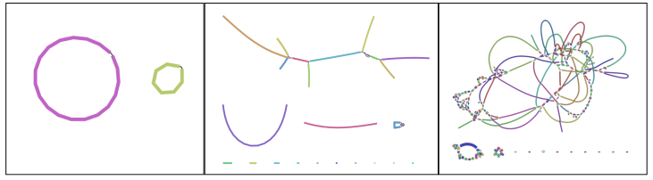

9 Assembly quality
After this section you should be able to:
- List common indicators to assess the quality of a genome assembly.
- Discuss general assembly statistics that can be used to assess genome contiguity and completeness.
- Examine assembly graphs and use them to determine the contiguity of an assembly.
- Apply specialised software to assess the genome completeness as well as potential contamination.
9.1 Assembly quality
The quality of a genome assembly can be influenced by various factors that impact its accuracy and completeness, from sample collection, to sequencing, to the bioinformatic analysis. To assess the quality of an assembly, several key indicators can be examined:
- Completeness: the extent to which the genome is accurately represented in the assembly, including both core and accessory genes.
- Contiguity: refers to how long the sequences are without gaps. A highly contiguous assembly means that longer stretches are assembled without interruptions, the best being chromosome-level assemblies. A less contiguous assembly will be represented in more separate fragments.
- Contamination: the presence of DNA from other species or sources in the assembly.
- Accuracy/correctness: how closely the assembled sequence matches the true sequence of the genome.
Evaluating these factors collectively provides insights into the reliability and utility of the genome assembly for further analysis and interpretation.
For example, before we even did our assembly, we had already checked for signs of sample contamination from our sequencing reads using Mash. Since our samples were generated from cultured colonies with vibrio-selective medium (TCBS), we are mostly expecting V. cholerae DNA, but other certain other Vibrio or enterobacterial species could end up in our cultured samples too. Our analysis indicated no concerning signs of contamination, which would have affected the accuracy of our assemblies.
Let’s now turn to some of the other metrics to help us assess our assemblies’ quality.

9.2 Contiguity
The assembly script we used in the previous chapter conveniently output a CSV file with some metrics of interest. This file can be found in results/assemblies/summary_metrics.csv. You can open it with a spreadsheet software such as Excel from our file browser . Alternatively you can print it directly on the terminal in a nice format using the column command, as shown here for the samples we’ve been using as an example:
column -t -s "," results/assemblies/summary_metrics.csvsample total_reads downsampled_reads assembly_length fragments n50 largest coverage
isolate01 121104 121104 4188802 35 369202 841273 31
isolate02 202685 168327 4240196 5 3031958 3031958 97
isolate03 247162 226566 4071558 2 3022820 3022820 100
isolate04 262453 151775 4228717 3 3040641 3040641 98
isolate05 157356 157356 4045552 229 29056 295945 21
isolate06 286582 286582 4240860 43 252998 416986 44
isolate07 187090 187090 4186377 38 214593 669735 40
isolate08 120555 120555 4083432 19 582736 885447 43
isolate09 121991 121991 4195953 113 105571 179265 23
isolate10 102589 102589 4214473 3 3026130 3026130 48The columns are:
- sample - our sample ID.
- total_reads - the total number of reads in our FASTQ files.
- downsampled_reads - the number of reads downsampled by
rasusato achive a coverage of 100x. - assembly_length - the total length of our assembled fragments.
- fragments - the number of fragments into which the reads were assembled to by the software
flye. - n50 - a metric indicating the length of the shortest fragment, from the group of fragments that together represent at least 50% of the total genome. A higher N50 value suggests better contig lengths.
- largest - the largest assembled fragment.
- coverage - the achieved coverage in the final genome assembly (this might be slightly lower than the coverage we intended when downsampling the reads).
To interpret these statistics, it helps to compare them with other well-assembled Vibrio cholerae genomes. For example, let’s take the first O1 El Tor genome that was sequenced, N16961, as our reference for comparison. This genome is 4 Mb long and is composed of 2 chromosomes.
We can see that all of our assemblies reached a total length of around 4 to 4.2 Mb, which matches the expected length from our reference genome. This indicates that we managed to assemble most of the expected genome. However, we can see that there is a variation in the number of fragments in the final assemblies (i.e. their contiguity). Isolates 2, 3, 4 and 10 were assembled to a small number of fragments each, suggesting good assemblies. In fact, for “isolate03” we only have 2 fragments, which indicates that for this sample we achieved a chromosome-level assembly!
For several other isolates our assemblies were more fragmented, in particular isolate05 and isolate09, which had hundreds of fragments. This indicates less contiguous sequences. We can see why this might be: there is a clear correlation between the number of fragments and the sequencing coverage. The lower the coverage is (i.e. the fewer times we sequenced each position of the genome), the more fragmented the assembly is. Clearly, a depth of coverage of around 100x is sufficient to get highly contiguous assemblies, whereas coverages below 50x result in more fragmented assemblies.
Note that there is no clear correlation between the number of reads and the final coverage. For example, isolates 4 and 5 had roughly the same number of reads used for the assembly (around 150k), but the latter was much more fragmented. This is likely because the library for that sample was composed of shorter reads (this would have to be verified from the quality report from the ONT sequencing platform).
Despite some of our assemblies being more fragmented, it doesn’t mean they are of no use to us. In fact, we may have still recovered most of the genes expected for this species, and we can therefore use them to investigate their strain types and the presence of toxigenic and antimicrobial resistance genes.
9.2.1 Assembly graph
Another approach to evaluate the continuity of our assembly is to examine the assembly graph generated by Flye. During genome assembly, Flye constructs a graph illustrating how it infers the various fragments connect to one another.
Figure 9.1 presents examples of genome graphs. The initial example displays an assembly composed of two circular fragments, which is the optimal outcome for our species of interest, Vibrio cholerae, as it possesses two circular chromosomes. The next example portrays a more fragmented genome with numerous small, unconnected fragments, along with other fragments linked at different points within the graph. This suggests difficulties in bridging certain gaps during genome assembly. The final example exhibits a highly intricate graph featuring multiple loops, indicating an inability to establish a likely order for the fragments in the final assembly. Such complexity is more common in species with highly repetitive sequences, especially when working solely with short-read data.

The software Bandage can be used to visualise the assembly graphs generated by Flye. It is a user-friendly graphical tool with the following steps:
- Click File > Load graph.
- Locate the Flye output folder (using our script, this is located in
results/assemblies/02-flye/SAMPLE-ID/assembly_graph.gfa). - Click Draw graph.
9.3 Completeness
We now turn to assessing genome completeness, i.e. whether we managed to recover most of the known Vibrio cholerae genome, or whether we have large fractions missing.
We can assess this by using CheckM2. This tool assesses the completeness of the assembled genomes based on other similar organisms in public databases, in addition to contamination scores. CheckM2 is mostly suited for prokaryotic species. For other organisms, the BUSCO software is a good alternative, as it supports all species and is also more stringent in determining completeness.
CheckM2 was specifically designed for working with metagenome-assembled genomes (MAGs). These are genomes created from a mixture of DNA from various species. CheckM2 has two main roles: it determines whether a given genome is complete and checks for signs of contamination in the genome. Contamination might occur when different organisms accidentally get combined in the assembly due to shared DNA sequences. Even though CheckM2 is intended for MAGs, it can also evaluate the completeness of genomes assembled from samples that aren’t mixed (which is our case).
This software employs machine learning models that were trained using many extensively annotated public sequences from RefSeq. These models help CheckM2 estimate how complete and uncontaminated the provided genome assemblies are. In our case, we anticipate a minimal level of contamination, as confirmed by Mash. However, we’re still uncertain about the completeness of our genomes.
We start our analysis by activating our software environment, to make all the necessary tools available:
mamba activate checkm9.3.1 checkm database
As part of its analysis, CheckM2 also does a rapid gene annotation. It does this by comparing our sequences to a database, using the super-fast local alignment software DIAMOND. This process enables CheckM2 to estimate the number of genes identified in our genomes, allowing us to make comparisons with the annotation of our organism’s reference genome.
For the gene annotation step, CheckM2 requires a DIAMOND database. This can be downloaded with the following command (don’t run this if you are attending our workshop, as we already did it for you):
checkm2 database --download --path resources/This command will automatically download the database into a folder named CheckM2_database with a the database file inside it called uniref100.KO.1.dmnd. We use this file in the next step.
You only need to download the database once. To save space (and time downloading it), it’s a good idea to save the database in a shared folder that you can use across multiple analysis.
9.3.2 checkm predict
Once the database is available, running CheckM2 is done with the checkm2 predict command, exemplified in this shell script:
#!/bin/bash
# make output directory
mkdir results/checkm2
# run checkm
checkm2 predict \
--input results/assemblies/*.fasta \
--output-directory results/checkm2/ \
--database_path resources/CheckM2_database/uniref100.KO.1.dmnd \
--lowmem --threads 12The options we used are:
--input- to specify the input files. Several files can be given as input, so we used the*wildcard to match all the FASTA files output by our assembly workflow script.--output-directory- the name of the output directory to store the results.--database_path- is the path to the database file we downloaded.--lowmem- in case you run this on a computer with low RAM memory (such as a laptop), this option will make sure the analysis runs successfully.--threads- to use multiple CPUs for parallel processing, which you can adjust depending on how many CPUs you have available on your computer (you can check this with the commandnproc --all).
The main output file from CheckM2 is a tab-delimited file called quality_report.tsv, which can be opened in a spreadsheet software such as Excel. Here is an example result (for brevity, we only show some columns of most interest):
Name Completeness Contamination Genome_Size GC_Content Total_Coding_Sequences
isolate01 92.51 5.19 4192535 0.48 5375
isolate02 89.72 4.0 4243727 0.48 5039
isolate03 85.39 3.52 4074948 0.47 4741
isolate04 85.76 3.84 4232274 0.48 5024
isolate05 85.01 2.15 4050061 0.48 5728
isolate06 82.81 4.58 4244765 0.48 5306
isolate07 82.8 5.93 4189945 0.48 5267
isolate08 82.82 5.07 4087172 0.48 5078
isolate09 91.59 5.67 4200084 0.48 5724
isolate10 86.19 3.99 4217448 0.48 5133These columns indicate:
- Name - our sample name.
- Completeness - how complete our genome was inferred to be as a percentage; this is based on the machine learning models used and the organisms present in the database.
- Contamination - the percentage of the assembly estimated to be contaminated with other organisms (indicating our assembly isn’t “pure”).
- Genome_Size - how big the genome is estimated to be, based on other similar genomes present in the database. The O1 El Tor reference N16961 is 4 Mb in total, so these values make sense.
- GC_Content - the percentage of G’s and C’s in the genome, which is relatively constant within a species. The V. cholerae GC content is 47%, so again these values make sense.
- Total_Coding_Sequences - the total number of coding sequences (genes) that were identified by CheckM2. The reference genome indicates 3,761 annotated genes, so the values obtained could be overestimated.
From this analysis, we can assess that our genome assemblies are good quality, with around 90% of the genome assembled. Despite earlier assessing that some of the isolates have more fragmented assemblies (e.g. isolates 5 and 9), they still have >85% completeness according to CheckM2.
It is worth noting that the assessment from CheckM2 is an approximation based on other genomes in the database. In diverse species such as Vibrio cholerae the completeness may be underestimated, because each individual strain will only carry part of the pangenome for that species.
We are therefore ready to proceed with downstream analysis, where we will further investigate how our samples relate to other V. cholerae strains and whether we find evidence for antibiotic resistance.
9.4 Accuracy
Assessing the accuracy of our genome includes addressing issues such as:
- Repeat resolution: the ability of the assembly to accurately distinguish and represent repetitive regions within the genome.
- Structural variations: detecting large-scale changes, such as insertions, deletions, or rearrangements in the genome structure.
- Sequencing errors: identifying whether errors from the sequencing reads have persisted in the final assembly, including single-nucleotide errors or minor insertions/deletions.
Assessing these aspects of a genome assembly can be challenging, primarily because the true state of the organism’s genome is often unknown, especially in the case of new genome assemblies. However, two considerations can aid in this assessment:
- Consistency: ensuring that different assemblies from the same data produce similar results. For more details on this approach, refer to the “Assembling the perfect bacterial genome” tutorial by Wick et al. (2023).
- Validation: confirming the assembly’s accuracy by cross-referencing it with additional data or external resources. Further exploration of this aspect will be covered in the phylogeny section.
9.5 Exercises
For these exercises, you can either use the dataset we provide in Data & Setup, or your own data. You also need to have completed the genome assembly exercise in Section 8.4.
9.6 Summary
- Key aspects to evaluate an assembly quality include:
- Contiguity: how continuous the final assembly is (the best assembly would be chromosome-level).
- Completeness: whether the entire genome of the species was captured.
- Common indicators for evaluating the contiguity of a genome assembly include metrics like N50, fragment count and total assembly size.
- Examination of assembly graphs reveals the contiguity of an assembly by illustrating how fragments connect, helping identify regions of potential fragmentation or misassembly.
- Specialised software tools, like CheckM2, enable the assessment of genome completeness and contamination by comparing the assembly to known reference genomes and identifying missing or unexpected genes and sequences.